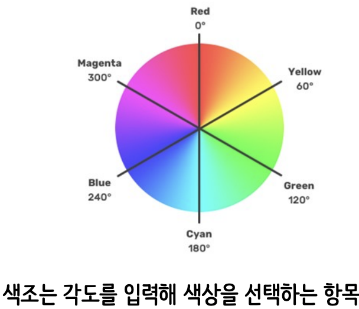

font-size
rem : 루트 요소(html태그)의 글자 크기를 배수로 계산해 적용하는 상대 단위
em : 부모 요소의 글자 크기를 배수로 계산해 적용하는 상대 단위
font-weight : 글자 두께 (100~900)
line-height : 폰트 크기와, 글꼴에 영향을 받기 때문에 수치를 필요에 따라 바꾸기
text-align : 텍스트 정렬 left / right / center / justify(양끝정렬)
text-decoration
이것은 테스트 문자 a-b-c-d-e
이것은 테스트 문자
이것은 테스트 문자
font-family에 여러글골을 지정하고 앞부터 적용, 적용이 불가하면 뒤의 글꼴 적용
웹 폰트 : 컴퓨터마다 글꼴의 설치 여부를 모르기에 '웹 전용 글꼴'로 문제 방지(검색어 : 구글폰트)
테스트 문자 하나, 둘, 셋
테스트 문자 one, two, three
color 지정 : 키워드 / rgb / hsl / 16진수
rgb(red, green, blue)
rgb(r,g,b,a) : 투명도 추가(기본 1)
hsl(색도hue, 채도saturation, 조도lightness)
hsl(h,s,l,a) : 투명도 추가

#로 시작하는 16진수값( 00~FF : 0~255 ) : RGB 색상 코드
#RRGGBB
#RRGGBBAA
투명도는 opacity로 설정도 가능
색깔을 알아보자
색깔을 알아보자
색깔을 알아보자
색깔을 알아보자